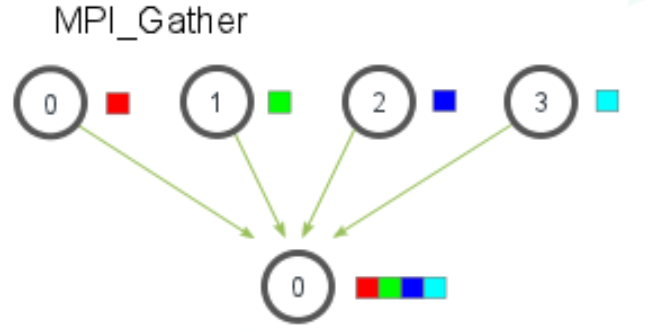

OMP、MPI培训文档¶
一、培训简介¶
- 培训目标：了解并行计算基本概念，掌握不同并行架构的基本代码编写。
- 培训内容：并行计算基础、OMP入门、MPI入门。
- 预备知识：能无痛阅读C语言代码、并知道C语言中的基本概念。能够区分CPU、核心、内存等基本计算机概念。
- 本文的选学自学内容或很简单或很难，为了文档完整性将其列出。学习他们需要自行信息检索，可以参考人工智能和搜索引擎的回答与文档中所列出来的链接。
- 本文所列举内容为常用内容，详细信息请参考链接和官方手册。
二、并行计算基础：¶
参考链接:
- 并行计算(CSDN介绍)
- 介绍原文(英文)(推荐阅读)
-
什么是并行计算
并行计算是一种通过将任务分解为多个子任务并同时在多个处理器或计算节点上执行的计算方式。它的主要目标是提高计算速度和效率，解决那些单一处理器难以快速处理的大规模问题。简而言之就是充分动用服务器硬件资源，将很大计算量的问题分解给不同的核心完成一部分，最终所有核心协作完成所有任务，以起到加速程序运行的效果。
并行计算的核心内容：计算任务分解、内存访问模型、并行单元间的通信。
-
并行计算的基本概念
-
并行性与并发性：并行（parallel）和并发（concurrency）的区别和联系_并行与并发的区别和联系-CSDN博客
并行性（Parallelism）
并行性指的是多个任务在同一时间同时执行。并行性通常依赖于多核或多处理器系统，在物理上允许多个任务在不同的处理器或计算核心上并行运行。
- 关键点：实际同时执行多个任务。
- 硬件要求：需要多核处理器或多个处理器。
- 示例：边洗澡边听歌
并发性（Concurrency）
并发性指的是多个任务在系统中交替进行，但这些任务并不一定同时运行。并发性侧重于任务之间的逻辑交替，而非物理上的同时运行。操作系统通过任务调度器快速切换任务，使它们看起来好像是同时运行的，虽然它们实际上在不同的时间片被执行。
- 关键点：多个任务在逻辑上交替进行，但不一定是同时执行的。
- 硬件要求：单核处理器也能支持并发，因为并发主要依赖于操作系统的任务调度机制。
- 示例：边玩手机边看电视
-
任务划分
负载均衡：确保任务均匀地分配到所有处理器或核心，避免某些处理器过载而其他处理器闲置。
任务粒度：选择适当的任务粒度，以平衡任务的管理开销和计算效率。粒度过细可能导致管理开销过高，粒度过粗可能导致负载不均。
通信开销：尽量减少处理器之间的数据交换，优化数据局部性，以降低通信开销。
同步开销：减少不同任务之间的同步需求，避免不必要的等待和阻塞。
可扩展性：确保任务划分策略能够适应处理器数量的增加，保持系统性能的可扩展性。
-
并行架构（共享内存与分布式内存）
共享内存架构（对应OpenMP）：所有处理器共享同一块物理内存。处理器可以直接访问和修改共享的数据。数据共享和同步机制较为直接，不需要显式通信操作。
分布式内存架构（对应MPI）：每个处理器或计算节点有独立的内存空间。处理器之间通过消息传递进行数据交换。数据交换和通信需要显式管理。
-
（选学）UMA（统一内存访问）与NUMA（非统一内存访问）内存架构
-
-
（自学）并行计算的性能指标
- 加速比与效率：了解定义
- 可扩展性：了解Amdahl定律和Gustafson定律
三、OpenMP入门：¶
参考链接： OpenMP入门教程 系列文章
-
OpenMP概述
- 什么是OpenMP？
OpenMP（Open Multi-Processing）是一种应用程序接口（API），用于在共享内存的多处理器系统上进行并行编程。它通过在代码中添加指令（pragmas）的方式，让程序员能够简单地将串行代码并行化，而不需要深入底层硬件或复杂的多线程管理。OpenMP支持C、C++和Fortran等语言。
- 适用场景：共享内存并行模型
-
OpenMP编程模型
- 共享内存模型
共享内存模型指的是所有线程在同一个地址空间中共享数据。这意味着不同线程可以访问相同的内存位置，并且可以共享变量的值。
共享变量：在并行区域中，默认情况下，大多数变量是共享的，即所有线程都可以访问和修改这些变量的值。
私有变量：某些情况下，我们可能希望每个线程拥有变量的私有副本，这样不同线程之间不会相互干扰。OpenMP通过
private指令指定这些变量。数据竞争（Race Condition）：由于多个线程同时访问和修改共享变量，可能会导致数据竞争问题。为了避免这种情况，OpenMP提供了同步机制，如
critical和atomic等。- 并行区域（Parallel Region）
并行区域是OpenMP编程的核心概念。它是由编译器指令
#pragma omp parallel指定的一段代码，告诉OpenMP在这段代码中创建多个线程并行执行。 -
OpenMP基本指令
#pragma omp parallel
用途: 定义一个并行区域，启动多个线程并行执行该区域中的代码。
示例：
#pragma omp parallel { // 并行执行的部分 }#pragma omp for
用途: 将循环的迭代分配给多个线程并行执行。
示例：
#pragma omp parallel for for (int i = 0; i < n; i++) { // 并行执行的循环体 }#pragma omp single
用途：指定代码块只由第一个到达线程执行，其他线程跳过该代码块。
-
OpenMP中的同步机制
#pragma omp critical
用途: 定义一个临界区，保证代码块在同一时刻只被一个线程执行，以防止竞争条件。
#pragma omp barrier
用途: 强制所有线程在此处同步，确保所有线程都执行到这一步后，才继续执行后续代码。
-
变量的作用域
shared：默认情况下，并行区域外申明的变量在并行区域中是共享的，可以使用shared子句显式指定变量为共享的。
示例：
int a; #pragma omp parallel for shared(a) for (int i = 0; i < n; i++) { // a为公有变量 }private：每个线程在并行区域中有自己独立的变量副本，线程之间相互独立，互不干扰。并行区域内申明的变量默认为私有的，并行区域外申明的变量需要显式申明private
示例：
int a; #pragma omp parallel for private(a) for (int i = 0; i < n; i++) { int b; //a,b均为私有变量 }reduction： 用于将每个线程的私有变量在并行区域结束时进行归约（如求和、求最大值等），最终将结果存储到共享变量中。
示例：
int sum = 0; #pragma omp parallel for reduction(+:sum) for (int i = 0; i < 10; i++) { sum += i; } -
调度方法
-
static：静态调度将循环的迭代均匀分配给所有线程，并且相邻的迭代会被分配在同一个线程，分配方式在程序开始执行时就已经确定。示例:
#pragma omp parallel for schedule(static, 3) for (int i = 0; i < n; i++) { // 每个线程执行3个连续的迭代 } -
dynamic：动态调度在执行时分配迭代，每当一个线程完成当前分配的迭代时，它会动态获取下一个块的迭代。 -
guided：引导调度是一种动态调度的变体，但块大小（chunk size）随着任务的完成而逐渐减小。 -
auto：自动调度将调度策略的选择权交给编译器或运行时库，由它们决定最佳的调度方式。 -
runtime：运行时调度允许在程序运行时通过环境变量设置调度策略。
-
-
环境变量
- OMP_SCHEDULE：负责规定调度方式。
- OMP_NUM_THREADS：设置执行期间要使用的最大线程数。
- OMP_PROC_BIND：启用或禁用线程绑定到处理器。有效值为TRUE或FALSE。
- OMP_STACKSIZE：控制创建（非主）线程的堆栈大小。
四、MPI入门：¶
参考链接:
- Tutorials · MPI Tutorial
- Open MPI 入门笔记 | JinBridge
- Coding Games and Programming Challenges to Code Better
- MPI之聚合通信-Scatter，Gather，Allgather
-
MPI概述
- 什么是MPI？
MPI（Message Passing Interface，消息传递接口）为在分布式内存架构下的进程间通信提供了规范和库支持。在程序的角度，MPI就是一系列函数接口，他们可以实现不同进程（不同内存区域）之间的消息传递
- 适用场景：分布式内存并行模型
-
MPI编程模型
-
分布式内存模型
在分布式内存模型中，各个处理节点可以独立运行自己的进程，使用自己的本地内存来存储和处理数据。每个进程的内存是私有的，其他进程无法直接访问它们。如果一个进程需要访问另一个进程的数据，就必须通过显式的消息传递机制将数据从一个进程发送到另一个进程。同一个节点（服务器）内部需要借助高速数据总线等硬件实现，而跨节点的通信通常由网络连接来实现，比如通过高速以太网、IB（InfiniBand）等。
-
MPI的核心概念
- 进程: 在MPI中，每个计算任务由一个或多个进程执行。进程是独立的计算实体，有自己的内存空间。MPI程序通常启动多个进程，这些进程在分布式内存系统中运行。
- 通信: MPI通过消息传递的方式进行进程间通信。主要有两种通信方式：
- 点对点通信（Point-to-Point Communication）: 两个进程之间直接传递消息。例如，进程A发送数据给进程B。
- 集体通信（Collective Communication）: 多个进程之间进行数据传递或同步操作。例如，广播（broadcast）、归约（reduce）等操作。
- 通信协议: MPI提供了多种通信协议，如阻塞通信（Blocking）、非阻塞通信（Non-blocking）、同步通信（Synchronous）等。
-
-
MPI基础函数接口
-
初始化与终止
-
MPI_Init：初始化MPI环境，必须在任何MPI调用之前调用。MPI_Init(&argc, &argv); -
MPI_Finalize：结束MPI环境，释放MPI使用的资源。MPI_Finalize();
-
-
获取进程信息
-
MPI_Comm_size：获取通信子（communicator）中进程的总数。int world_size; MPI_Comm_size(MPI_COMM_WORLD, &world_size); -
MPI_Comm_rank：获取当前进程在通信子中的编号（从0开始）。int world_rank; MPI_Comm_rank(MPI_COMM_WORLD, &world_rank);
-
-
点对点通信
-
MPI_Send：发送消息到指定的进程。//接口细节 int MPI_Send(const void *buf, int count, MPI_Datatype datatype, int dest, int tag, MPI_Comm comm); /* buf: 发送数据的起始地址。 count: 要发送的数据元素个数。 datatype: 数据类型（如MPI_INT、MPI_FLOAT）。 dest: 目标进程的编号。 tag: 消息标识，用于匹配接收消息。 comm: 通信子 */ //示例 int number = 42; MPI_Send(&number, 1, MPI_INT, 1, 0, MPI_COMM_WORLD); -
MPI_Recv：接收来自指定进程的消息。//接口细节 int MPI_Recv(void *buf, int count, MPI_Datatype datatype, int source, int tag, MPI_Comm comm, MPI_Status *status); /* buf: 接收数据的起始地址。 count: 可接收的数据元素个数。 datatype: 数据类型（如MPI_INT、MPI_FLOAT）。 source: 源进程的编号。 tag: 消息标识，用于匹配接收消息。 comm: 通信子。 status: 返回状态信息的结构体指针（可以传递MPI_STATUS_IGNORE忽略）。 */ //示例 int number; MPI_Recv(&number, 1, MPI_INT, 0, 0, MPI_COMM_WORLD, MPI_STATUS_IGNORE);
-
-
集合通信
-
MPI_Bcast：将一条消息从一个进程广播到通信子中的所有进程。//接口细节 int MPI_Bcast(void *buffer, int count, MPI_Datatype datatype, int root, MPI_Comm comm) /* buffer: 广播数据的起始地址。 count: 数据元素个数。 datatype: 数据类型（如MPI_INT、MPI_FLOAT）。 root: 广播的源进程编号。 comm: 通信子。 */ //示例 int data = 100; MPI_Bcast(&data, 1, MPI_INT, 0, MPI_COMM_WORLD); -
MPI_Scatter：将根进程的数据分散（scatter）到所有进程中。每个进程接收根进程提供的数据的一部分。与bcast相比//接口细节 int MPI_Scatter(const void *sendbuf, int sendcount, MPI_Datatype sendtype, void *recvbuf, int recvcount, MPI_Datatype recvtype, int root, MPI_Comm comm); /* sendbuf: 发送数据的起始地址。 send_count：具体需要给每个进程发送的数据的个数 sendtype：数据类型。 recvbuf: 接收结果的地址（仅根进程使用）。 recvcount: 接受数据元素个数。 recvtype: 数据类型。 root: 接收结果的根进程编号。 comm: 通信子。 */ -
MPI_Reduce：对来自所有进程的数据进行归约操作（如求和、求最小值），并将结果发送到根进程。//接口细节 int MPI_Reduce(const void *sendbuf, void *recvbuf, int count, MPI_Datatype datatype, MPI_Op op, int root, MPI_Comm comm); /* sendbuf: 发送数据的起始地址。 recvbuf: 接收结果的地址（仅根进程使用）。 count: 数据元素个数。 datatype: 数据类型。 op: 归约操作（如MPI_SUM、MPI_MIN）。 root: 接收结果的根进程编号。 comm: 通信子。 */ //示例 int sum; int local_data = 5; MPI_Reduce(&local_data, &sum, 1, MPI_INT, MPI_SUM, 0, MPI_COMM_WORLD); -
MPI_Gather：将各进程的数据收集到根进程中。//接口细节 int MPI_Gather(const void *sendbuf, int sendcount, MPI_Datatype sendtype, void *recvbuf, int recvcount, MPI_Datatype recvtype, int root, MPI_Comm comm); /* sendbuf: 发送数据的起始地址。 sendcount: 每个进程发送的数据元素个数。 sendtype: 发送数据的数据类型。 recvbuf: 接收数据的地址（仅根进程使用）。 recvcount: 每个进程发送的数据元素个数（接收方）。 recvtype: 接收数据的数据类型。 root: 接收结果的根进程编号。 comm: 通信子。 */ //示例 int local_data = 5; int gathered_data[4]; MPI_Gather(&local_data, 1, MPI_INT, gathered_data, 1, MPI_INT, 0, MPI_COMM_WORLD); -
MPI_Allgather：将所有进程的部分数据汇总到所有进程。每个进程在所有进程中接收到所有其他进程的数据。
//接口细节 int MPI_Allgather(const void *sendbuf, int sendcount, MPI_Datatype sendtype, void *recvbuf, int recvcount, MPI_Datatype recvtype, MPI_Comm comm); /* sendbuf: 每个进程要发送的数据的缓冲区指针。 sendcount: 每个进程发送的数据元素个数。 sendtype: 发送数据的类型。 recvbuf: 每个进程接收数据的缓冲区的指针。 recvcount: 每个进程接收的数据元素个数。 recvtype: 接收数据的类型。 comm: 通信子。 */
-
-
-
MPI中的同步与异步通信
-
阻塞通信 vs. 非阻塞通信
- 阻塞通信是指在通信操作完成之前，调用该通信函数的进程会被阻塞（即等待）。这意味着在通信操作完成之前，进程无法继续执行后续的操作。这种通信方法实现较为简单，但是可能会导致进程等待，特别是在进行大量通信操作时影响性能。适用于简单的通信场景。
- 非阻塞通信允许进程在发送或接收数据的同时继续执行其他计算任务。通信操作的完成会在稍后的时间自动进行，可以与计算任务重叠，提高性能，但是编程复杂度较高，需要显式检查通信完成状态。
-
MPI_Isend、MPI_Irecv、MPI_Wait（选学）：MPI_Isend非阻塞地发送数据，MPI_Irecv非阻塞地接收数据。MPI_Wait用于确保非阻塞操作完成之后再继续执行后续代码。
-
-
MPI中的数据类型与通讯域/通信子/通讯器（选学）
-
MPI_Datatype：MPI提供了内置和自定义数据类型，用于定义数据的格式和结构。自定义数据类型允许更复杂的数据组织和传输。 -
MPI_Comm：MPI中的通信域定义了进程的集合，这些进程可以在同一通信域内进行数据交换。MPI提供了默认通信域和创建自定义通信域的功能，以支持不同的并行计算模式和需求。
-
五、练习题（自测题）¶
OpenMP：
- 创建4个线程，输出“hello world from thread %d”，%d为当前线程的编号，多运行几次试试有什么区别？你对数据竞争这一现象是不是有了新的体会呢？
-
尝试优化以下简单向量加法代码，用openmp并行即可(将以下代码拷贝保存为vector_add.c)
1 2 3 4 5 6 7 8 9 10 11 12 13 14 15 16 17 18 19 20 21 22 23 24 25 26 27 28 29 30 31 32 33 34 35 36 37 38 39 40 41 42 43 44 45 46 47 48 49 50 51 52 53 54 55 56 57 58 59 60 61 62 63 64 65 66 67 68 69 70 71 72 73 74 75 76 77 78 79
#include <stdio.h> #include <stdlib.h> #include <omp.h> #include <time.h> #define N 10000000 // 向量大小 // 初始化向量 void initialize_vector(float *v, int size) { for (int i = 0; i < size; i++) { v[i] = rand() % 100; } } // 串行向量加法 void vector_add_serial(float *a, float *b, float *c, int size) { for (int i = 0; i < size; i++) { c[i] = a[i] + b[i]; } } // OpenMP并行化向量加法，唯一需要修改的地方 void vector_add_parallel(float *a, float *b, float *c, int size) { for (int i = 0; i < size; i++) { c[i] = a[i] + b[i]; } } //main函数只是作为驱动测试，不需要修改 int main() { float *a = (float *)malloc(N * sizeof(float)); float *b = (float *)malloc(N * sizeof(float)); float *c_serial = (float *)malloc(N * sizeof(float)); float *c_parallel = (float *)malloc(N * sizeof(float)); // 初始化向量a和b initialize_vector(a, N); initialize_vector(b, N); // 测量串行向量加法时间 clock_t start_serial = clock(); vector_add_serial(a, b, c_serial, N); clock_t end_serial = clock(); double time_serial = (double)(end_serial - start_serial) / CLOCKS_PER_SEC; // 测量并行向量加法时间 clock_t start_parallel = clock(); vector_add_parallel(a, b, c_parallel, N); clock_t end_parallel = clock(); double time_parallel = (double)(end_parallel - start_parallel) / CLOCKS_PER_SEC; // 检查串行和并行结果是否一致 int correct = 1; for (int i = 0; i < N; i++) { if (c_serial[i] != c_parallel[i]) { correct = 0; break; } } if (correct) { printf("Results are correct.\n"); } else { printf("Results are incorrect.\n"); } // 输出时间对比 printf("Serial Time: %f seconds\n", time_serial); printf("Parallel Time: %f seconds\n", time_parallel); // 释放内存 free(a); free(b); free(c_serial); free(c_parallel); return 0; }如果你要在ide（如codeblocks、vscode、vs）等地方运行，请信息检索如何配置环境。如果你在命令行上运行，参考以下编译运行方法：
gcc -fopenmp vector_add.c -o vector_add ./vector_add -
（选做）蒙特卡洛算法估算\(\pi\)。做法如下：在[0,1]内随机生成两个数字作为一个点的x，y坐标，计算该点到坐标原点的距离，判断距离是否小于1。如此重复很多很多次，记录下距离小于1的点的个数。用距离小于1的点的个数除以总实验次数，这个值将会是 \(\frac{\pi}{4}\)。没错，就是用频率估计概率+几何概型。尝试实现串行版本代码，并修改为openmp并行版本，在很大试验次数的情况下对比运行时间（计时方法可以参考上一题的#include
）
MPI：完成以下网站中的代码题，其中非阻塞通信部分选做
Coding Games and Programming Challenges to Code Better (codingame.com)